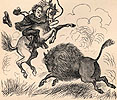
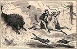
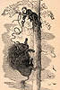

){kind=link}
){kind=link}
){kind=link}

|

Next morning, just before dawn, when about five hundred and fifty miles from St. Joseph, our mud-wagon broke down. We were to be delayed five or six hours, and therefore we took horses, by invitation, and joined a party who were just starting on a buffalo hunt. It was noble sport galloping over the plain in the dewy freshness of the morning, but our part of the hunt ended in disaster and disgrace, for a wounded buffalo bull chased the passenger Bemis nearly two miles, and then he forsook his horse and took to a lone tree. He was very sullen about the matter for some twenty-four hours, but at last he began to soften little by little, and finally he said: "Well, it was not funny, and there was no sense in those gawks making themselves so facetious over it. I tell you I was angry in earnest for awhile. I should have shot that long gangly lubber they called Hank, if I could have done it without crippling six or seven other people--but of course I couldn't, the old 'Allen's' so confounded comprehensive. I wish those loafers had been up in the tree; they wouldn't have wanted to laugh so. If I had had a horse worth a cent--but no, the minute he saw that buffalo bull wheel on him and give a bellow, he raised straight up in the air and stood on his heels. The saddle began to slip, and I took him round the neck and laid close to him, and began to pray. Then he came down and stood up on the other end awhile, and the bull actually stopped pawing sand and bellowing to contemplate the inhuman spectacle. Then the bull made a pass at him and uttered a bellow that sounded perfectly frightful, it was so close to me, and that seemed to literally prostrate my horse's reason, and make a raving distracted maniac of him, and I wish I may die if he didn't stand on his head for a quarter of a minute and shed tears. He was absolutely out of his mind--he was, as sure as truth itself, and he really didn't know what he was doing. Then the bull came charging at us, and my horse dropped down on all fours and took a fresh start--and then for the next ten minutes he would actually throw one hand-spring after another so fast that the bull began to get unsettled, too, and didn't know where to start in--and so he stood there sneezing, and shovelling dust over his back, and bellowing every now and then, and thinking he had got a fifteen-hundred dollar circus horse for breakfast, certain. Well, I was first out on his neck--the horse's, not the bull's--and then underneath, and next on his rump, and sometimes head up, and sometimes heels--but I tell you it seemed solemn and awful to be ripping and tearing and carrying on so in the presence of death, as you might say. Pretty soon the bull made a snatch for us and brought away some of my horse's tail (I suppose, but do not know, being pretty busy at the time), but something made him hungry for solitude and suggested to him to get up and hunt for it.  And then you ought to have seen that spider legged old skeleton go! and you ought to have seen the bull cut out after him, too--head down, tongue out, tail up, bellowing like everything, and actually mowing down the weeds, and tearing up the earth, and boosting up the sand like a whirlwind! By George, it was a hot race! I and the saddle were back on the rump, and I had the bridle in my teeth and holding on to the pommel with both hands. First we left the dogs behind; then we passed a jackass rabbit; then we overtook a cayote, and were gaining on an antelope when the rotten girth let go and threw me about thirty yards off to the left, and as the saddle went down over the horse's rump he gave it a lift with his heels that sent it more than four hundred yards up in the air, I wish I may die in a minute if he didn't. I fell at the foot of the only solitary tree there was in nine counties adjacent (as any creature could see with the naked eye), and the next second I had hold of the bark with four sets of nails and my teeth, and the next second after that I was astraddle of the main limb and blaspheming my luck in a way that made my breath smell of brimstone. I had the bull, now, if he did not think of one thing. But that one thing I dreaded. I dreaded it very seriously. There was a possibility that the bull might not think of it, but there were greater chances that he would. I made up my mind what I would do in case he did. It was a little over forty feet to the ground from where I sat. I cautiously unwound the lariat from the pommel of my saddle --" "Your saddle? Did you take your saddle up in the tree with you?" "Take it up in the tree with me? Why, how you talk. Of course I didn't. No man could do that. It fell in the tree when it came down." "Oh--exactly." "Certainly. I unwound the lariat, and fastened one end of it to the limb. It was the very best green raw-hide, and capable of sustaining tons. I made a slip-noose in the other end, and then hung it down to see the length. It reached down twenty-two feet--half way to the ground. I then loaded every barrel of the Allen with a double charge. I felt satisfied. I said to myself, if he never thinks of that one thing that I dread, all right--but if he does, all right anyhow--I am fixed for him. But don't you know that the very thing a man dreads is the thing that always happens? Indeed it is so. I watched the bull, now, with anxiety--anxiety which no one can conceive of who has not been in such a situation and felt that at any moment death might come. Presently a thought came into the bull's eye. I knew it! said I--if my nerve fails now, I am lost. Sure enough, it was just as I had dreaded, he started in to climb the tree --" "What, the bull?" "Of course--who else?" "But a bull can't climb a tree." "He can't, can't he? Since you know so much about it, did you ever see a bull try?" "No! I never dreamt of such a thing." "Well, then, what is the use of your talking that way, then? Because you never saw a thing done, is that any reason why it can't be done?" "Well, all right--go on. What did you do?"  "The bull started up, and got along well for about ten feet, then slipped and slid back. I breathed easier. He tried it again--got up a little higher--slipped again. But he came at it once more, and this time he was careful. He got gradually higher and higher, and my spirits went down more and more. Up he came--an inch at a time--with his eyes hot, and his tongue hanging out. Higher and higher--hitched his foot over the stump of a limb, and looked up, as much as to say, 'You are my meat, friend.' Up again--higher and higher, and getting more excited the closer he got. He was within ten feet of me! I took a long breath,--and then said I, 'It is now or never.' I had the coil of the lariat all ready; I paid it out slowly, till it hung right over his head; all of a sudden I let go of the slack, and the slipnoose fell fairly round his neck! Quicker than lightning I out with the Allen and let him have it in the face. It was an awful roar, and must have scared the bull out of his senses. When the smoke cleared away, there he was, dangling in the air, twenty foot from the ground, and going out of one convulsion into another faster than you could count! I didn't stop to count, anyhow--I shinned down the tree and shot for home." "Bemis, is all that true, just as you have stated it?" "I wish I may rot in my tracks and die the death of a dog if it isn't." "Well, we can't refuse to believe it, and we don't. But if there were some proofs --" "Proofs! Did I bring back my lariat?" "No." "Did I bring back my horse?" "No." "Did you ever see the bull again?" "No." "Well, then, what more do you want? I never saw anybody as particular as you are about a little thing like that." I made up my mind that if this man was not a liar he only missed it by the skin of his teeth. |